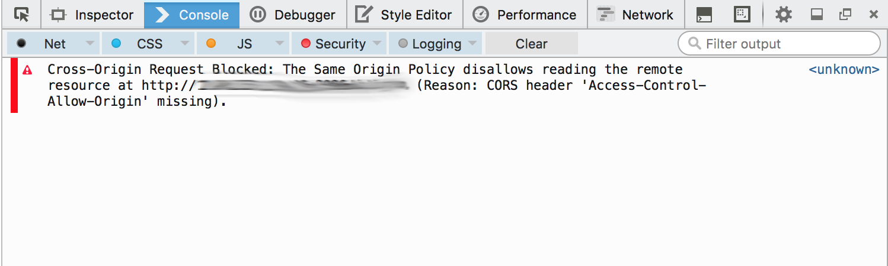

All about Cross Origin Resource Sharing (CORS)
Ok so sometime back I was searching about CORS and the security implications around it and I didn't get any much resource around it so I got to messing around with it to know it better. To start with this is not going to be a typical blog about bug bounty but I aim to serve some important terms and working around CORS.
Ok so let me first start with how this came into existence.
Same origin policy: The same-origin policy is an important security mechanism implemented by web browsers to prevent Javascript code from making requests against a different origin (e.g., different domain) than the one from which it was served. Although the same-origin policy is effective in preventing resources from different origins, it also prevents legitimate interactions between a server and clients of a known and trusted origin.
Ok so Cross origin resource sharing or CORS is a method developed around the browsers to increase the client side security of web applications.
Let's stray from CORS a bit and learn a bit about cookies first and how it serves our purpose.
Now as we all know what are cookies; and why are they used but what many of us dont know is how important they are and it's configuration with proper headers.
set-cookie: TestCookie=Hydra1234; expires=Thu, 21-Dec-2017 14:50:04 GMT; Max-Age=3600; path=/; domain=.hydraz.me; secure; HttpOnly
Some details about the cookie values
- domain:The (sub)domain that the cookie is available to. Setting this to a domain other than the current domain name will effectively make the cookie invalid.
- secure:Indicates that the cookie should only be transmitted over a secure HTTPS connection from the client. When set to TRUE, the cookie will only be set if a secure connection exists.
- httponly: When TRUE the cookie will be made accessible only through the HTTP protocol. This means that the cookie won't be accessible by scripting languages, such as JavaScript. It has been suggested that this setting can effectively help to reduce identity theft through XSS .
So as we can see there are various security configuration in place to differentiate between different domains and what to share between them even if it's a sub domain of the main domain. An important reference is the Set Cookie function in the php manual.
So why CORS?
- Sites like GitHub.io came with serving their users with their own subdomain
- Its mandatory that a user of a particular subdomain shouldn't be authorized to access or identified by the cookie of some other subdomain.
- sometimes it became necessary to identify the user as well as share resources between various domains.
- now both the security measure can be maintained by Cross origin resource sharing techniques.
- cors essentially allows vendors to maintain users identity across various domains.
Now first to know CORS we must know synchronous and asynchronous requests by a browser.
- A simple example of a synchronous request can be a contact us form.
- Where you fill out the information
- you submit the form.
- the form redirect/takes you to the thank you page.
- A simple example of asynchronous request is when you click on add a product to cart on most of the website and it adds the product to your cart without reloading the entire page.
- Another difference can be told as a synchronous request work one after another; that a second request is always followed only after clearing the previous request. But in case of asynchronous request it doesn't need to be completed for another request to be made and also if one request completes before another request it has the liberty to show the results at the time of completion and not wait for any other request.
Now coming to CORS, it makes an asynchronous request to get the resource (Synchronous CORS requests are deprecated). Now why is it so important to configure and how does it play a critical role in security?
In the simplest scenario, cross-origin communications starts with a client making a GET, POST, or HEAD request against a resource on the server. In this scenario, the content type of a POST request is limited to application/x-www-form-urlencoded, multipart/form-data, or text/plain. The request includes an Origin header that indicates the origin of the client code.
Following is an example CORS pre flight request and response.
OPTIONS /resource/12345
User-Agent: Mozilla/5.0 (Macintosh; Intel Mac OS X 10_8_5) AppleWebKit/536.30.1 (KHTML, like Gecko) Version/6.0.5 Safari/536.30.1
Access-Control-Request-Method: DELETE
Access-Control-Request-Headers: origin, x-requested-with, accept
Origin: http://foo.client.com
HTTP/1.1 200 OK
Date: Wed, 20 Nov 2013 19:36:00 GMT
Server: Apache-Coyote/1.1
Content-Length: 0
Connection: keep-alive
Access-Control-Allow-Origin: http://foo.client.com
Access-Control-Allow-Methods: POST, GET, OPTIONS, DELETE
Access-Control-Max-Age: 86400
Let's see some important terms in CORS
- Origin: the domain from which the request is originated
- Access-Control-Allow-Origin: specifies what origin headers are accepted.
- Access-Control-Request-Method: specfies what all type of requests are accepted.
- Access-Control-Max-Age: specifies the amount of time for which the preflight request is valid.
- Access-Control-Allow-Credentials: response header indicates whether or not the response to the request can be exposed to the page.
- Pre Flight Request Preflight request is a request made by browser prior to the XML http request. This is to ensure that the xhttp request made is supported and allowed by the endpoint specified in the xhttp request.
Some important thing to note are
- If Access-Control-Allow-Origin is set to * then Access-Control-Allow-Credentials automattically assumes the value false. Why? Some developers are lazy so instead of specifying the accepted domains for cors request they just specify * and this is not a good practice. So browsers like chrome, Mozilla to save users from client side attacks automatically makes the credential header to false so that cookies etc won't be sent for CORS having response with allowed origin with *
- CSRF could still be tried in case Access-Control-Allow-Origin is set to *.
- CORS is essentially used to share resources (credentials or cookies) between trusted domains.
Let's take an use case scenario of a merchant website and how it can effectively use CORS to defend csrf. Let's call it abc.com
- Now user A wants to purchase a product from abc.com
- Now abc.com wants to check if this is a legitimate user and not a forged request. So they can only allow Asynchronous request by using ajax based request in legitimate domain.
This can be done by checking if the- User is sending a options request.
- User is sending options request from same domain i.e abc.com in this case
- User is making a
application/jsonrequest and not atext/htmlrequest.
- Now if an attacker tries a cross site request forgery with the victim
- The browser
- if it's a synchronous request; abc.com can simply block it.
- if it's an asynchronous request from another domain then the cookie sending with the request ( which is important to confirm authenticated requests) will be blocked by the browser.
References:
- Post by Spring.io